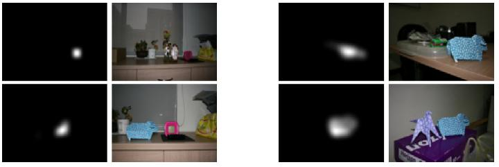

Preattentive Co-Saliency Detection

-
Abstract
-
This paper presents a new algorithm to solve the problem of
co-saliency detection, i.e., to find the common salient objects
that are present in both of a pair of input images. Unlike most
previous approaches, which require correspondence match-
ing, we seek to solve the problem of co-saliency detection
under a preattentive scheme. Our algorithm does not need to
perform the correspondence matching between the two input
images, and is able to achieve co-saliency detection before the
focused attention occurs. The joint information provided by
the image pair enables our algorithm to inhibit the responses
of other salient objects that appear in just one of the images.
Through experiments we show that our algorithm is effective
in localizing the co-salient objects inside input image pairs.
Last updated: 12 January 2012